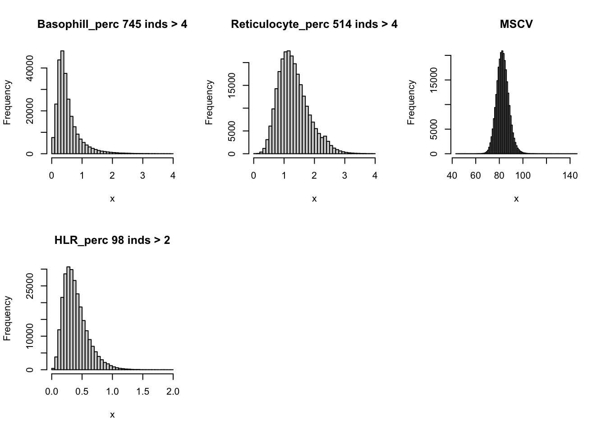
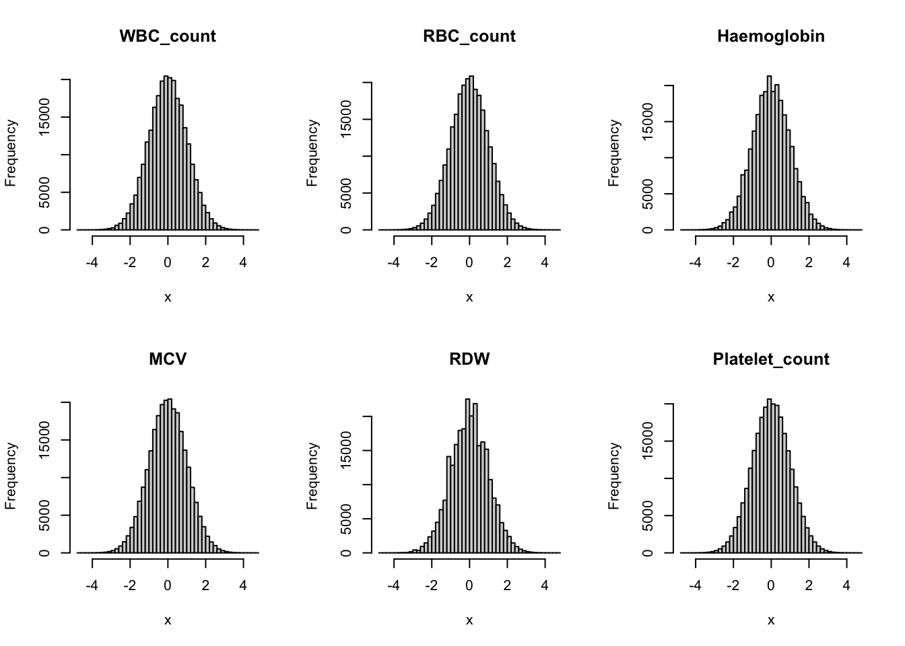
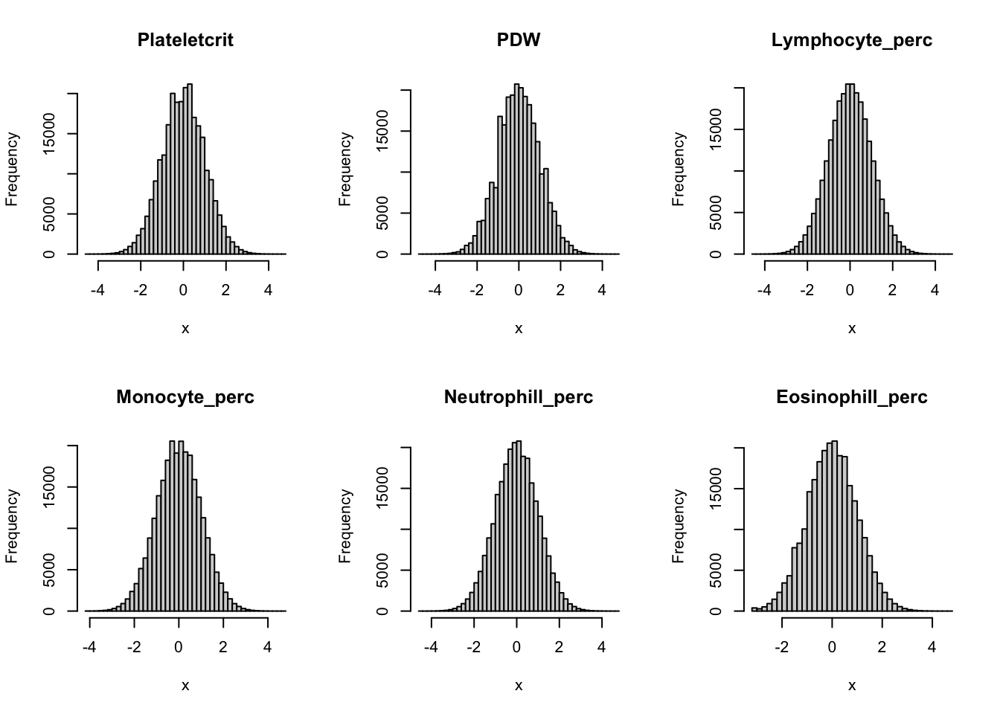
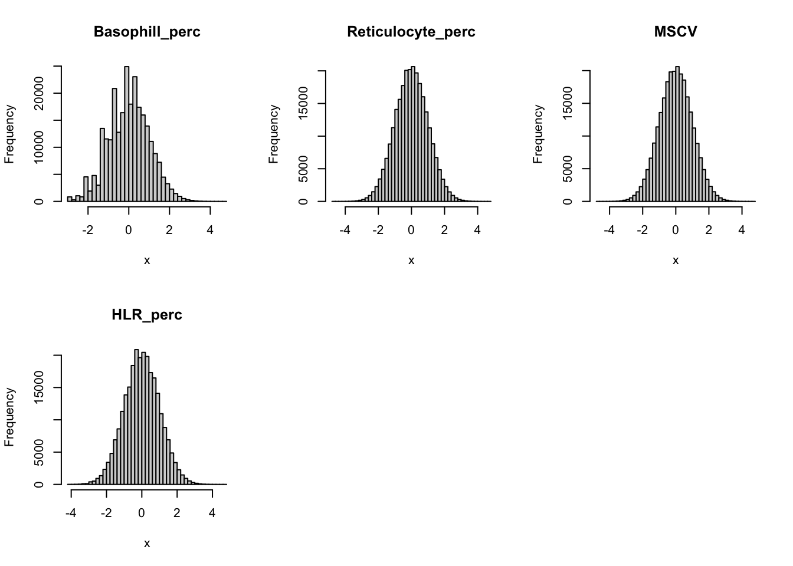
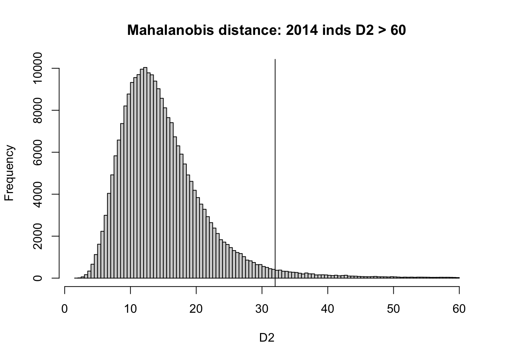

UKBiobank Blood Cell
Yuxin Zou
10/26/2020
Last updated: 2020-12-01
Checks: 7 0
Knit directory: finemap-uk-biobank/
This reproducible R Markdown analysis was created with workflowr (version 1.6.2). The Checks tab describes the reproducibility checks that were applied when the results were created. The Past versions tab lists the development history.
Great! Since the R Markdown file has been committed to the Git repository, you know the exact version of the code that produced these results.
Great job! The global environment was empty. Objects defined in the global environment can affect the analysis in your R Markdown file in unknown ways. For reproduciblity it’s best to always run the code in an empty environment.
The command set.seed(20191114) was run prior to running the code in the R Markdown file. Setting a seed ensures that any results that rely on randomness, e.g. subsampling or permutations, are reproducible.
Great job! Recording the operating system, R version, and package versions is critical for reproducibility.
Nice! There were no cached chunks for this analysis, so you can be confident that you successfully produced the results during this run.
Great job! Using relative paths to the files within your workflowr project makes it easier to run your code on other machines.
Great! You are using Git for version control. Tracking code development and connecting the code version to the results is critical for reproducibility.
The results in this page were generated with repository version 9d83199. See the Past versions tab to see a history of the changes made to the R Markdown and HTML files.
Note that you need to be careful to ensure that all relevant files for the analysis have been committed to Git prior to generating the results (you can use wflow_publish or wflow_git_commit). workflowr only checks the R Markdown file, but you know if there are other scripts or data files that it depends on. Below is the status of the Git repository when the results were generated:
Ignored files:
Ignored: .DS_Store
Ignored: .Rhistory
Ignored: .Rproj.user/
Ignored: analysis/.Rhistory
Ignored: data/.DS_Store
Ignored: scripts/.DS_Store
Untracked files:
Untracked: data/bloodcells1.csv
Untracked: data/height.chr3.matrix
Untracked: data/susie_ss_input_sex.rds
Unstaged changes:
Modified: analysis/compare_result_more.Rmd
Note that any generated files, e.g. HTML, png, CSS, etc., are not included in this status report because it is ok for generated content to have uncommitted changes.
These are the previous versions of the repository in which changes were made to the R Markdown (analysis/bloodcells.Rmd) and HTML (docs/bloodcells.html) files. If you’ve configured a remote Git repository (see ?wflow_git_remote), click on the hyperlinks in the table below to view the files as they were in that past version.
| File | Version | Author | Date | Message |
|---|---|---|---|---|
| Rmd | 9d83199 | zouyuxin | 2020-12-01 | wflow_publish(“analysis/bloodcells.Rmd”) |
| html | c99025a | zouyuxin | 2020-11-20 | Build site. |
| Rmd | 3d72c3e | zouyuxin | 2020-11-20 | wflow_publish(“analysis/bloodcells.Rmd”) |
| html | c8fec0b | zouyuxin | 2020-11-20 | Build site. |
| Rmd | dc3c938 | zouyuxin | 2020-11-20 | wflow_publish(“analysis/bloodcells.Rmd”) |
| html | e8b80d9 | zouyuxin | 2020-11-20 | Build site. |
| Rmd | 1e62d77 | zouyuxin | 2020-11-20 | wflow_publish(“analysis/bloodcells.Rmd”) |
| html | f762e73 | zouyuxin | 2020-11-20 | Build site. |
| Rmd | aae06f5 | zouyuxin | 2020-11-20 | wflow_publish(“analysis/bloodcells.Rmd”) |
| html | 1dbfe6c | zouyuxin | 2020-11-18 | Build site. |
| Rmd | e0f8d53 | zouyuxin | 2020-11-18 | wflow_publish(“analysis/bloodcells.Rmd”) |
| html | e172885 | zouyuxin | 2020-11-02 | Build site. |
| Rmd | 5e746f1 | zouyuxin | 2020-11-02 | wflow_publish(“analysis/bloodcells.Rmd”) |
| html | 4f52b21 | zouyuxin | 2020-11-02 | Build site. |
| Rmd | 719d7f3 | zouyuxin | 2020-11-02 | wflow_publish(“analysis/bloodcells.Rmd”) |
| html | 0aeed27 | zouyuxin | 2020-11-02 | Build site. |
| Rmd | 9459e04 | zouyuxin | 2020-11-02 | wflow_publish(“analysis/bloodcells.Rmd”) |
| html | 9e0d1c3 | zouyuxin | 2020-11-02 | Build site. |
| Rmd | 075c952 | zouyuxin | 2020-11-02 | wflow_publish(“analysis/bloodcells.Rmd”) |
| html | b6f3f56 | zouyuxin | 2020-10-27 | Build site. |
| Rmd | d20e2e8 | zouyuxin | 2020-10-27 | wflow_publish(“analysis/bloodcells.Rmd”) |
The UkB blood cell traits are
library(kableExtra)
library(knitr)
PheID = seq(30000, 30300, by=10)
PheID = PheID[-which(PheID %in% c(30170,30230))]
Abbrev = c('WBCcount', 'RBCcount', 'HGB', 'HCT', 'MCV', 'MCH', 'MCHC', 'RDW', 'PLTcount', 'PCT', 'MPV', 'PDW', 'LYMPHcount', 'MONOcount', 'NEUTcount', 'EOcount', 'BASOcount', 'LYMPHperc', 'MONOperc', 'NEUTperc', 'EOperc', 'BASOperc', 'RETperc', 'RETcount', 'MRV', 'MSCV', 'IRF', 'HLRperc', 'HLRcount')
Phenotype = c('White blood cell count', 'Red blood cell count', 'Haemoglobin concentration', 'Haematocrit percentage', 'Mean corpuscular volume', 'Mean corpuscular haemoglobin', 'Mean corpuscular haemoglobin concentration', 'Red blood cell distribution width', 'Platelet count', 'Platelet crit', 'Mean platelet (thrombocyte) volume', 'Platelet distribution width', 'Lymphocyte count', 'Monocyte count', 'Neutrophill count', 'Eosinophill count', 'Basophill count', 'Lymphocyte percentage', 'Monocyte percentage', 'Neutrophill percentage', 'Eosinophill percentage', 'Basophill percentage', 'Reticulocyte percentage', 'Reticulocyte count', 'Mean reticulocyte volume', 'Mean sphered cell volume', 'Immature reticulocyte fraction', 'High light scatter reticulocyte percentage', 'High light scatter reticulocyte count')
Cell_Type = c('Compound white cell', 'Mature red cell', 'Mature red cell', 'Mature red cell', 'Mature red cell', 'Mature red cell', 'Mature red cell', 'Mature red cell', 'Platelet', 'Platelet', 'Platelet', 'Platelet', 'Lymphoid white cell', 'Myeloid white cell', 'Myeloid white cell', 'Myeloid white cell', 'Myeloid white cell', 'Compound white cell', 'Compound white cell', 'Compound white cell', 'Compound white cell', 'Compound white cell', 'Immature red cell', 'Immature red cell', 'Immature red cell', 'Mature red cell', 'Immature red cell', 'Immature red cell', 'Immature red cell')
Determination = c('Measured', 'Measured', 'Measured', '(RBCcount x MCV) / 10', 'Measured', '(hemoglobin/RBCcount) x 10', '(haemoglobin/haematocrit) x 100', 'Measured', 'Measured', 'Measured', '(PCT/PLTcount) x 10000', 'Measured', '(LYMPHperc/100) x WBCcount', '(MONOperc/100) x WBCcount', '(NEUTperc/100) x WBCcount', '(EOperc/100) x WBCcount', '(BASOperc/100) x WBCcount', 'Measured', 'Measured', 'Measured', 'Measured', 'Measured', 'Measured', '(RETperc/100) × RBCcount', 'MCV x (RETperc/100)', 'Measured', 'HLRcount/RETcount', 'Measured', '(HLRperc/100) × RBCcount')
Phenos = data.frame(PheID, Abbrev, Phenotype, Cell_Type, Determination)
kbl(Phenos) %>% kable_paper("striped", full_width = F) %>% row_spec(which(Phenos$Determination == 'Measured'), background = "greenyellow")| PheID | Abbrev | Phenotype | Cell_Type | Determination |
|---|---|---|---|---|
| 30000 | WBCcount | White blood cell count | Compound white cell | Measured |
| 30010 | RBCcount | Red blood cell count | Mature red cell | Measured |
| 30020 | HGB | Haemoglobin concentration | Mature red cell | Measured |
| 30030 | HCT | Haematocrit percentage | Mature red cell | (RBCcount x MCV) / 10 |
| 30040 | MCV | Mean corpuscular volume | Mature red cell | Measured |
| 30050 | MCH | Mean corpuscular haemoglobin | Mature red cell | (hemoglobin/RBCcount) x 10 |
| 30060 | MCHC | Mean corpuscular haemoglobin concentration | Mature red cell | (haemoglobin/haematocrit) x 100 |
| 30070 | RDW | Red blood cell distribution width | Mature red cell | Measured |
| 30080 | PLTcount | Platelet count | Platelet | Measured |
| 30090 | PCT | Platelet crit | Platelet | Measured |
| 30100 | MPV | Mean platelet (thrombocyte) volume | Platelet | (PCT/PLTcount) x 10000 |
| 30110 | PDW | Platelet distribution width | Platelet | Measured |
| 30120 | LYMPHcount | Lymphocyte count | Lymphoid white cell | (LYMPHperc/100) x WBCcount |
| 30130 | MONOcount | Monocyte count | Myeloid white cell | (MONOperc/100) x WBCcount |
| 30140 | NEUTcount | Neutrophill count | Myeloid white cell | (NEUTperc/100) x WBCcount |
| 30150 | EOcount | Eosinophill count | Myeloid white cell | (EOperc/100) x WBCcount |
| 30160 | BASOcount | Basophill count | Myeloid white cell | (BASOperc/100) x WBCcount |
| 30180 | LYMPHperc | Lymphocyte percentage | Compound white cell | Measured |
| 30190 | MONOperc | Monocyte percentage | Compound white cell | Measured |
| 30200 | NEUTperc | Neutrophill percentage | Compound white cell | Measured |
| 30210 | EOperc | Eosinophill percentage | Compound white cell | Measured |
| 30220 | BASOperc | Basophill percentage | Compound white cell | Measured |
| 30240 | RETperc | Reticulocyte percentage | Immature red cell | Measured |
| 30250 | RETcount | Reticulocyte count | Immature red cell | (RETperc/100) × RBCcount |
| 30260 | MRV | Mean reticulocyte volume | Immature red cell | MCV x (RETperc/100) |
| 30270 | MSCV | Mean sphered cell volume | Mature red cell | Measured |
| 30280 | IRF | Immature reticulocyte fraction | Immature red cell | HLRcount/RETcount |
| 30290 | HLRperc | High light scatter reticulocyte percentage | Immature red cell | Measured |
| 30300 | HLRcount | High light scatter reticulocyte count | Immature red cell | (HLRperc/100) × RBCcount |
To prepare the phenotype data, we need to remove samples with abnormal observations. Since we will jointly model blood cell traits using multivariate normal distribution, we want to discard outliers in multivariate normal, instead of univariate normal. There are derived phenotypes which depend on several measured phenotype. To simplify the problem, we discard directly derived phenotypes. We use 16 phenotypes.
trait_names = c("WBC_count", "RBC_count", "Haemoglobin", "MCV", "RDW", "Platelet_count", "Plateletcrit", "PDW", "Lymphocyte_perc", "Monocyte_perc", "Neutrophill_perc", "Eosinophill_perc", "Basophill_perc", "Reticulocyte_perc", "MSCV", "HLR_perc")We filtered individuals with following criteria:
Remove samples that are not marked as being “White British”.
Remove samples with missing values.
Remove samples with mismatches between self-reported and genetic sex.
Remove outliers defined by UK Biobank.
Remove any individuals have at leat one relative based on the kinship calculations.
Remove any pregnant individuals.
Remove any individuals with following in hospital in-patient data:
leukemia, lymphoma, bone marrow transplant, chemotherapy, myelodysplastic syndrome, anemia, HIV, end-stage kidney disease, dialysis, cirrhosis, multiple myeloma, lymphocytic leukemia, myeloid leukemia, polycythaemia vera, haemochromatosis
Identify outliers in multivariate normal.
Load UKBiobank Blood Cell traits (individuals are filtered using script before line 121).
library(data.table)
library(dplyr)
dat = fread('data/bloodcells1.csv')
class(dat) <- "data.frame"There are 257605 individuals.
Check distribution for each trait:
par(mfrow=c(2,3))
hist(dat$WBC_count[dat$WBC_count < 20], breaks = 100, main=paste0('WBC_count ', sum(dat$WBC_count > 20), ' inds > 20'), xlab='x')
hist(dat$RBC_count, main='RBC_count', xlab='x', breaks = 100)
hist(dat$Haemoglobin, main='Haemoglobin', xlab='x', breaks = 100)
hist(dat$MCV, main='MCV', xlab='x', breaks = 100)
hist(dat$RDW[dat$RDW < 20], main=paste0('RDW ', sum(dat$RDW > 20), ' inds > 20'), xlab='x', breaks = 100)
hist(dat$Platelet_count, main='Platelet_count', xlab='x', breaks = 100)
hist(dat$Plateletcrit, main='Plateletcrit', xlab='x', breaks = 100)
hist(dat$PDW, main='PDW', xlab='x', breaks = 50)
hist(dat$Lymphocyte_perc, main='Lymphocyte_perc', xlab='x', breaks = 100)
hist(dat$Monocyte_perc[dat$Monocyte_perc < 20], main=paste0('Monocyte_perc ', sum(dat$Monocyte_perc > 20), ' inds > 20'), xlab='x', breaks = 100)
hist(dat$Neutrophill_perc, main='Neutrophill_perc', xlab='x', breaks = 100)
hist(dat$Eosinophill_perc[dat$Eosinophill_perc < 10], main=paste0('Eosinophill_perc ', sum(dat$Eosinophill_perc > 10), ' inds > 10'), xlab='x', breaks = 100)hist(dat$Basophill_perc[dat$Basophill_perc < 4], main=paste0('Basophill_perc ', sum(dat$Basophill_perc > 4), ' inds > 4'), xlab='x', breaks = 50)
hist(dat$Reticulocyte_perc[dat$Reticulocyte_perc < 4], main=paste0('Reticulocyte_perc ', sum(dat$Reticulocyte_perc > 4), ' inds > 4'), xlab='x', breaks = 50)
hist(dat$MSCV, main='MSCV', xlab='x', breaks = 100)
hist(dat$HLR_perc[dat$HLR_perc < 2], main=paste0('HLR_perc ', sum(dat$HLR_perc > 2), ' inds > 2'), xlab='x', breaks = 50)
Inverse normalization for each trait:
dat_1 = dat
for(i in 16:31){
dat_1[,i] = qnorm((rank(dat_1[,i],na.last="keep")-0.5)/sum(!is.na(dat_1[,i])))
}par(mfrow=c(2,3))
for(i in 16:31){
hist(dat_1[,i], breaks = 50, main=colnames(dat_1)[i], xlab='x')
}
Identify Outliers
trait_names = c("WBC_count", "RBC_count", "Haemoglobin", "MCV", "RDW", "Platelet_count", "Plateletcrit", "PDW", "Lymphocyte_perc", "Monocyte_perc", "Neutrophill_perc", "Eosinophill_perc", "Basophill_perc", "Reticulocyte_perc", "MSCV", "HLR_perc")
dat_1_traits = dat_1 %>% select(all_of(trait_names))Covariace matrix of traits
library(corrplot)corrplot 0.84 loadedcovy = cov(dat_1_traits)
corrplot(covy, method='color', type='upper', tl.col="black", tl.srt=45, is.corr = FALSE)
Measure Mahalanobis distance
D2 = stats::mahalanobis(dat_1_traits, center=0, cov=covy) # squared Mahalanobis distance
{hist(D2[D2 < 60], breaks = 100, main=paste0('Mahalanobis distance: ', sum(D2 > 60), ' inds D2 > 60'), xlab='D2')
abline(v=qchisq(0.01, df=16, lower.tail = F))}
The Mahalanobis distance follows a Chi-Square distribution with df = 16. We compute the 99.9%-Quantile of the Chi-Square distribution with 16 degrees of freedomm and we remove samples with Mahalanobis distance greater than the distance.
dat_select = dat_1[D2 < qchisq(0.01, df=16, lower.tail = F),]There are 248980 individuals.
sessionInfo()R version 4.0.3 (2020-10-10)
Platform: x86_64-apple-darwin17.0 (64-bit)
Running under: macOS Big Sur 10.16
Matrix products: default
BLAS: /Library/Frameworks/R.framework/Versions/4.0/Resources/lib/libRblas.dylib
LAPACK: /Library/Frameworks/R.framework/Versions/4.0/Resources/lib/libRlapack.dylib
locale:
[1] en_US.UTF-8/en_US.UTF-8/en_US.UTF-8/C/en_US.UTF-8/en_US.UTF-8
attached base packages:
[1] stats graphics grDevices utils datasets methods base
other attached packages:
[1] corrplot_0.84 dplyr_1.0.2 data.table_1.13.2 knitr_1.30
[5] kableExtra_1.3.1 workflowr_1.6.2
loaded via a namespace (and not attached):
[1] Rcpp_1.0.5 highr_0.8 pillar_1.4.7 compiler_4.0.3
[5] later_1.1.0.1 git2r_0.27.1 tools_4.0.3 digest_0.6.27
[9] evaluate_0.14 lifecycle_0.2.0 tibble_3.0.4 viridisLite_0.3.0
[13] pkgconfig_2.0.3 rlang_0.4.9 rstudioapi_0.13 yaml_2.2.1
[17] xfun_0.19 stringr_1.4.0 httr_1.4.2 xml2_1.3.2
[21] generics_0.1.0 fs_1.5.0 vctrs_0.3.5 tidyselect_1.1.0
[25] rprojroot_2.0.2 webshot_0.5.2 glue_1.4.2 R6_2.5.0
[29] rmarkdown_2.5 purrr_0.3.4 magrittr_2.0.1 whisker_0.4
[33] scales_1.1.1 promises_1.1.1 ellipsis_0.3.1 htmltools_0.5.0
[37] rvest_0.3.6 colorspace_2.0-0 httpuv_1.5.4 stringi_1.5.3
[41] munsell_0.5.0 crayon_1.3.4